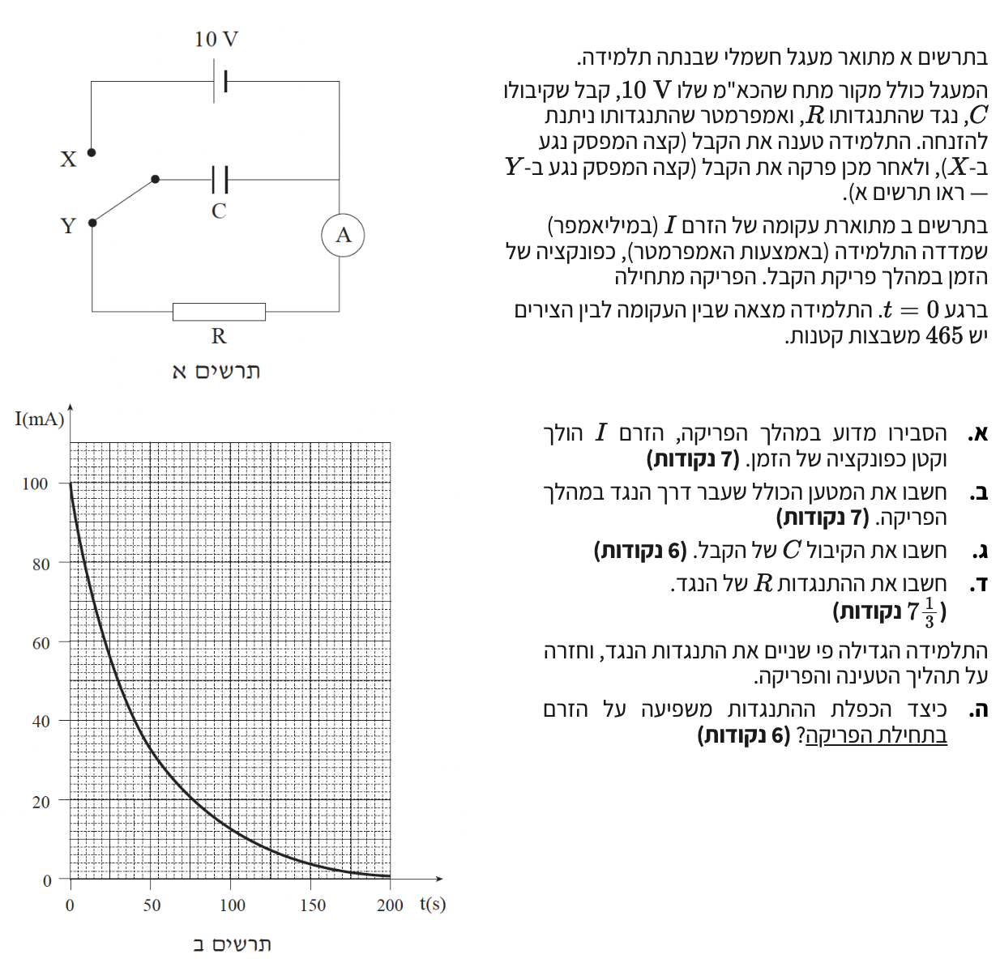

פתרון בגרות בפיזיקה - חשמל 2002, שאלה 3
מבט כללי על השאלה
שאלה זו עוסקת במעגל זרם ישר המכיל קבל ונגד (מעגל RC). נבחן את תהליך הפריקה של הקבל דרך הנגד, לאחר שנטען במלואו על ידי מקור המתח.
הכלי המרכזי העומד לרשותנו בשאלה זו הוא גרף זרם הפריקה כפונקציה של הזמן, ממנו נפיק נתונים על ידי קריאת ערכים נקודתיים (כמו הזרם ההתחלתי) וחישוב השטח הכלוא תחת הגרף, המייצג את המטען הכולל שזרם במעגל.

סעיף א'
- הקבל \( C \) נטען במלואו ולאחר מכן המפסק עובר למצב Y.
- הקבל נפרק דרך הנגד \( R \).
\( C = \frac{Q}{V_C} \) (הגדרת קיבול, מתח על קבל)
\( V = IR \) (חוק אוהם)
כאשר המפסק מועבר לנקודה Y, הקבל מנותק ממקור המתח ומהווה כעת את "מקור האנרגיה" היחיד במעגל הפריקה. במצב זה נוצר מעגל סגור הכולל את הקבל והנגד המחוברים במקביל.
![]()
בתהליך הפריקה, מטענים עוזבים את לוחות הקבל וזורמים דרך הנגד. כתוצאה מכך, כמות המטען \( Q \) שנותרה על הקבל הולכת וקטנה עם הזמן.
על פי הקשר \( V_C = \frac{Q}{C} \), מכיוון שהקיבול \( C \) קבוע והמטען \( Q \) קטן, גם המתח על הקבל \( V_C \) הולך וקטן.
המתח על הנגד שווה בכל רגע למתח על הקבל (\( V_R = V_C \)). על פי חוק אוהם \( I = \frac{V_R}{R} \), הזרם במעגל עומד ביחס ישר למתח. לכן, כאשר המתח במעגל נופל, גם עוצמת הזרם \( I \) הולכת וקטנה בהתאמה.
סעיף ב'
- גרף המתאר את זרם הפריקה כפונקציה של הזמן.
- השטח הכלוא בין העקומה לצירים מורכב מ-465 משבצות קטנות.
\( i = \frac{dq}{dt} \) (זרם רגעי, ומכאן המטען הוא השטח הכלוא תחת גרף זרם-זמן)
תחילה עלינו לקבוע מהו הערך הפיזיקלי (השטח) אותו מייצגת משבצת קטנה אחת בגרף. נבצע המרת יחידות (MKS) תוך כדי הקריאה מהצירים.
שלב 1: כיול ציר הזרם (y)בין הערכים 0 ל-20 מיליאמפר ישנן 10 משבצות קטנות. לכן, הגובה של משבצת קטנה אחת הוא:
נמיר לאמפר (יחידת SI תקנית):
בין הערכים 0 ל-50 שניות ישנן 10 משבצות קטנות. לכן, הרוחב של משבצת קטנה אחת הוא:
השטח של משבצת קטנה אחת שווה למכפלת הגובה ברוחב (זרם כפול זמן, המייצג מטען):
ידוע כי תחת העקומה ישנן 465 משבצות. המטען הכולל יהיה:
סעיף ג'
- מקור המתח למעגל הוא \( \varepsilon = 10 \text{ V} \). לפני תחילת הפריקה, הקבל היה טעון במלואו, כלומר מתחו ההתחלתי היה \( V_0 = 10 \text{ V} \).
- המטען ההתחלתי הכולל שהיה על הקבל חושב בסעיף הקודם: \( Q = 4.65 \text{ C} \).
\( C = \frac{Q}{V} \) (הגדרת הקיבול)
נרשום את הגדרת הקיבול:
נציב את ערך המטען שחושב בסעיף ב' ואת מתח הקבל ההתחלתי:
סעיף ד'
- מתח הקבל ברגע תחילת הפריקה (\( t=0 \)) הוא \( V_0 = 10 \text{ V} \). ברגע זה, מתח הנגד שווה למתח הקבל.
- על פי הגרף, ברגע \( t=0 \), הזרם ההתחלתי במעגל הוא \( I_0 = 100 \text{ mA} \).
\( V = IR \) (חוק אוהם)
קריאת הזרם ההתחלתי מהגרף והמרתו ליחידות תקניות (A):
ברגע \( t=0 \), מתח הנגד שווה למתח הקבל \( V_0 \). לפי חוק אוהם:
נבודד את ההתנגדות \( R \):
נציב את הנתונים המספריים:
סעיף ה'
- התנגדות הנגד הוכפלה, כלומר \( R_{\text{new}} = 2R \).
- הקבל נטען מחדש לאותו מקור מתח, כך שהמתח ההתחלתי \( V_0 = 10 \text{ V} \) נשאר ללא שינוי.
\( I = \frac{V}{R} \) (חוק אוהם)
נרשום את חוק אוהם עבור הזרם ההתחלתי במצב החדש:
נציב \( R_{\text{new}} = 2R \):
נוציא את הגורם הקבוע \( \frac{1}{2} \) ונזהה את הזרם ההתחלתי המקורי \( I_0 = \frac{V_0}{R} \):
נציב את הערך המספרי של הזרם המקורי:
כלומר, מכיוון שההתנגדות גדלה פי שניים והמתח ההתחלתי נשאר קבוע, הזרם ההתחלתי יקטן בדיוק פי שניים לפי היחס ההפוך בין התנגדות לזרם.